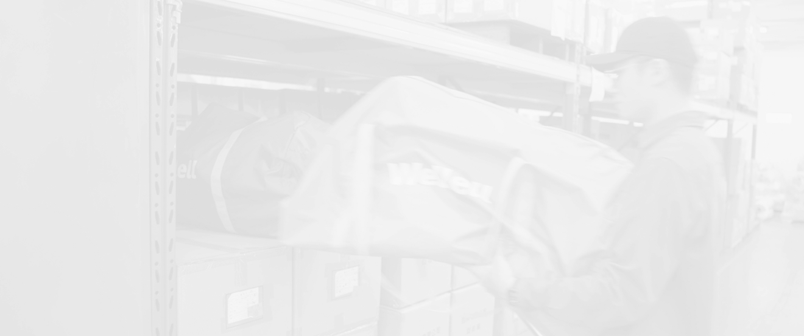
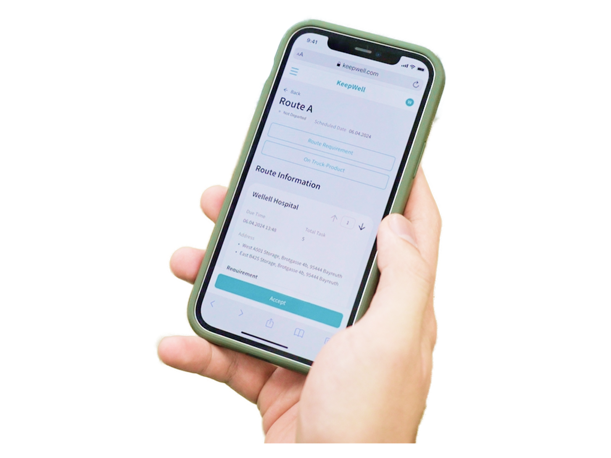


本專案已簽署 NDA，無法於公開平台展示專案細節。
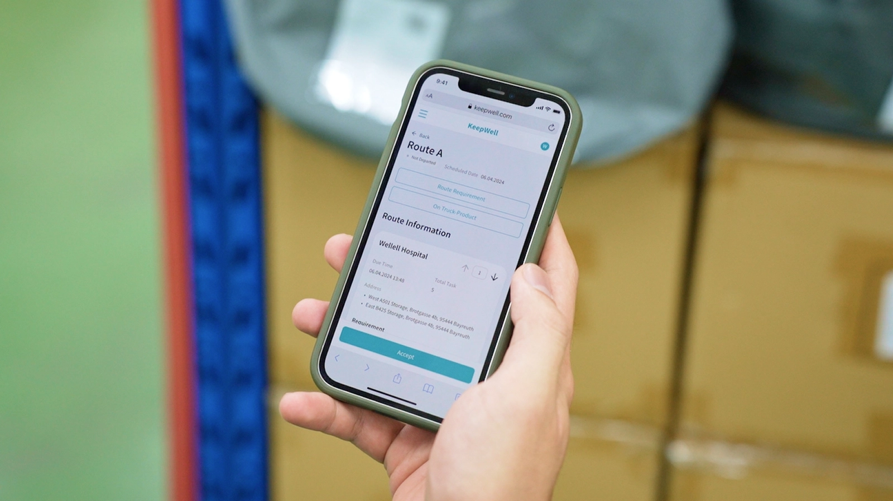
KeepWell 是一個為 PRC 醫療器材所開發的清消與租賃流程管理 SaaS 系統，搭配專為醫療器材所設計的 QRcode 資產追蹤標籤，提供歐洲的醫療器材服務商進行場內器材庫存、清消、訂單、物流、客戶… 等完整服務流程的數位化管理。此軟體當前主要服務出租醫療氣墊床的服務商。
接觸服務商後發現，其物流的作業流程難以配合 QRcode 的掃描方式。因為 Qrcode 資產追蹤標籤需要使用者找到並看到標籤本身才能掃描，而該服務商經常以籠車為單位在收送氣墊床，很難在運送過程中翻找出資產追蹤碼（一個籠車可放約 20 組氣墊床，一張氣墊床約 15 公斤重）。
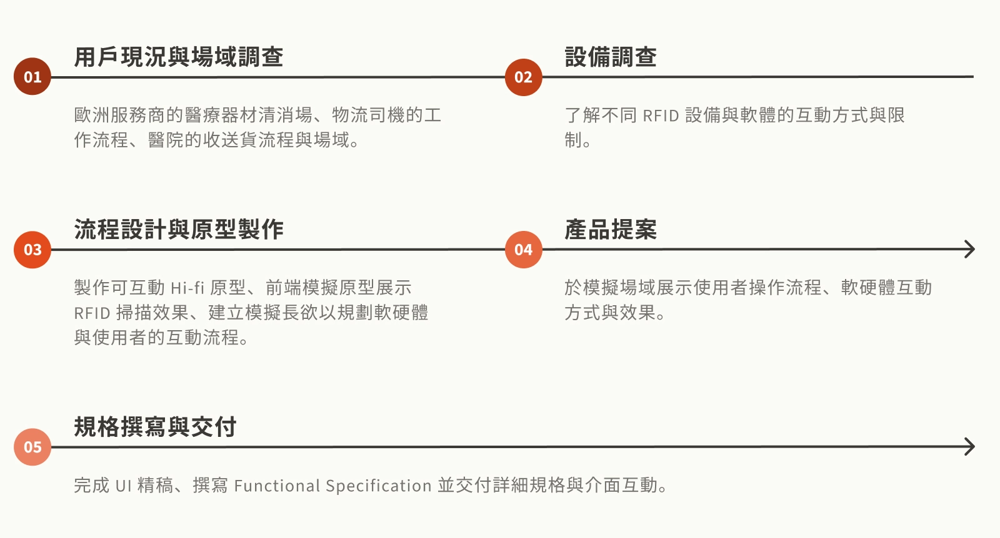
頻繁掃描會降低收送貨作業效率。
護理人員回收後的氣墊床通常不會整齊堆放，而是分散在回收區。司機多半以目視確認後直接搬上籠車，不會逐一清點每一張床墊。
產品堆疊後難以找到資產追蹤標籤。
部分服務商會將氣墊床堆疊在金屬籠車中，QRcode 常被遮住或朝內，導致司機無法逐一找到並掃描每個標籤。
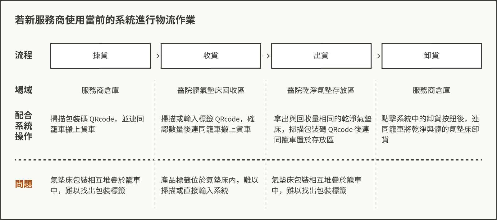
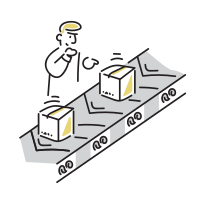

因應歐洲市場工業 4.0 的轉型趨勢，新增 RFID 掃描功能提升客戶滿意度與市場競爭力。

提供使用者從揀貨、出貨、收貨、卸貨入庫完整的 RFID 資產追蹤功能。

讓用戶於手機端能快速進行產品掃描移轉，並針對掃描過程的例外情況提供適當的引導。
經過於客戶現場的場域調查，我們發現物流相關流程中，需選配二種 RFID 掃描設備並使軟體兼容不同的掃描方式，以滿足服務商在不同場域的使用需求，提升作業效率。
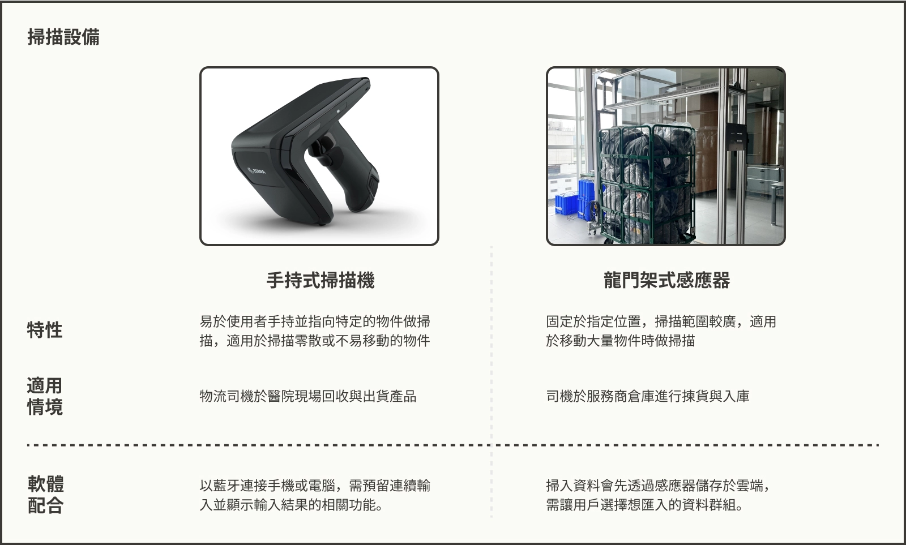
根據調查，服務商在物流階段資產追蹤最在乎的時間點為「氣墊床送達醫院」和「氣墊床被司機回收」（作為向醫院收取租賃費的依據），且「回收數量」為物流司機現場作業時最在意的資訊（確保補給醫院相同數量的乾淨氣墊床），產品序號、是否損壞、確切數量... 等皆等到回廠卸貨後，才交給產品清消人員做複查。
因此，我採用以下兩個設計原則將 RFID 功能整合進物流模組：
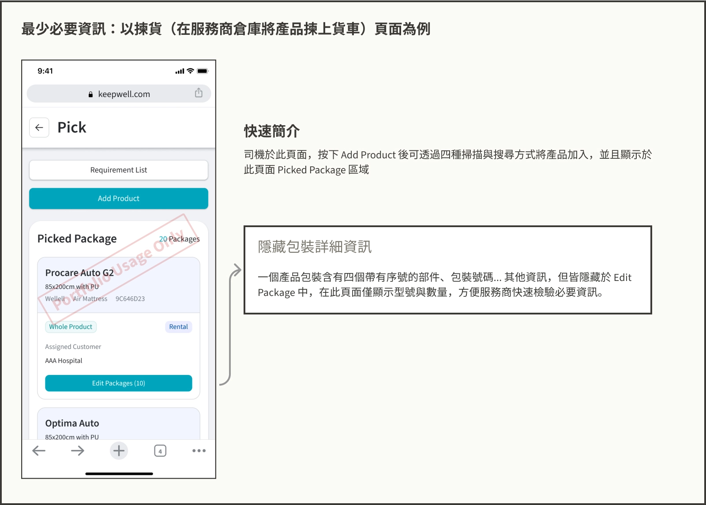
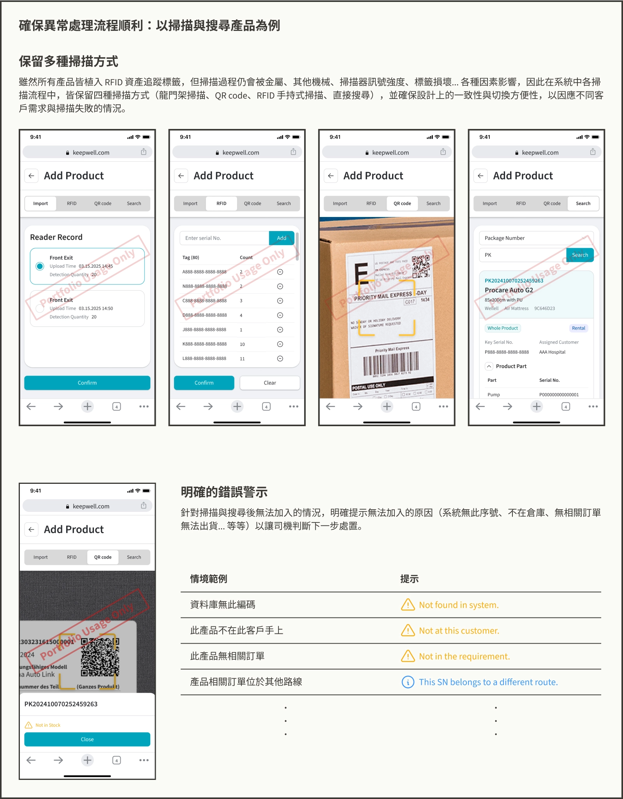
我們仿照服務商與醫院環境，依用戶旅程圖建構模擬場域，並製作可互動原型以測試設計概念。
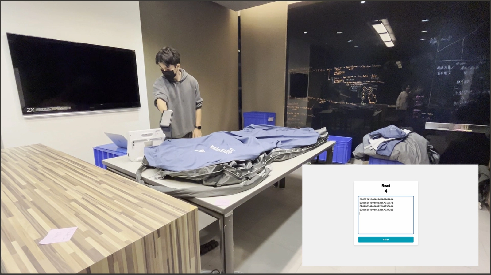
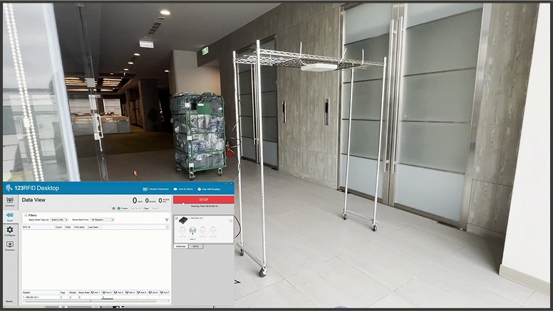
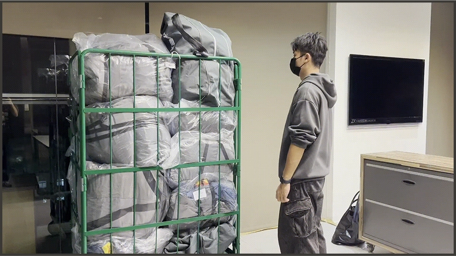
我們向客戶展示不同 RFID 設備的掃描方式與結果，利用模擬場域模擬作業人員的掃描方式，並搭配提案簡報說明軟體開發路徑與導入相關準備事宜。並成功於 2025 年下半年確認簽約購買相關服務。
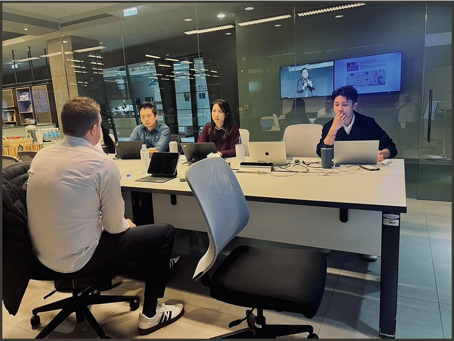
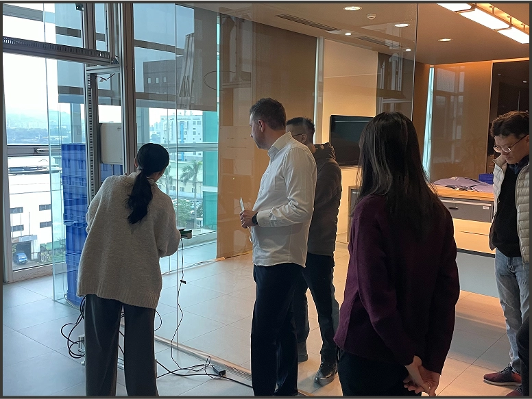
在這次調查中發現，服務商和醫院為了提高作業效率，時常私下談妥並省略一部分我們原先認為重要的作業環節，例如出租商品序號複查、準確的回收時間、現場確認出租物無損壞... 等等。導致我們在初始版本中，根據易用性原則來避免用戶錯誤操作和確保數據精確的設計，對使用者來說反而是多餘的資訊與功能。
在系統過往的設計中，不同模組之間的資料是密不可分的，移除任一個模組都會造成資料無法運作。本次專案中，為符合客戶實體場域的需求，我們花了許多時間針對模組的拆解作許多調整，甚至花了不少心力改動其他模組的架構來允許模組拆分。
未來，在已知目標使用者群本來就有多種使用流程的情況下，在設計各模組之間的串接時應更注意模組化的可能，避免每次遇到作業流程不同的客戶就需要花費大量時間調整。